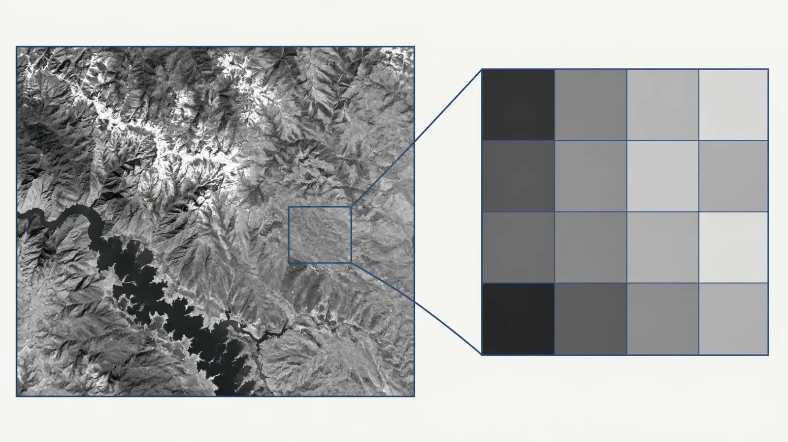
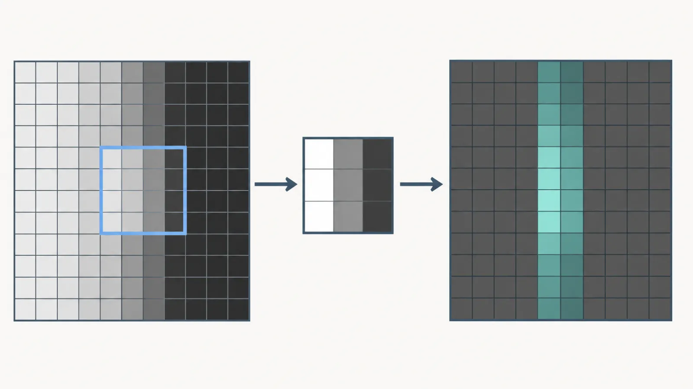
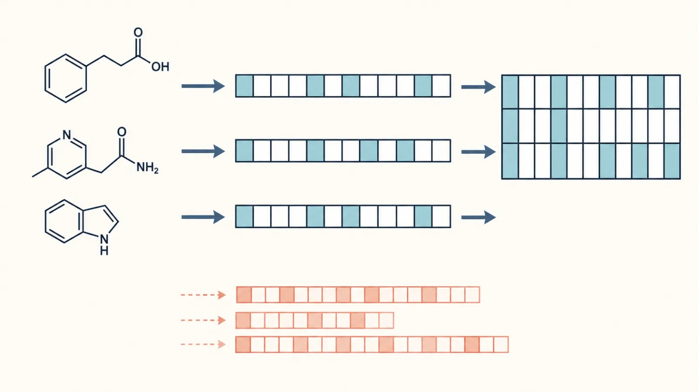
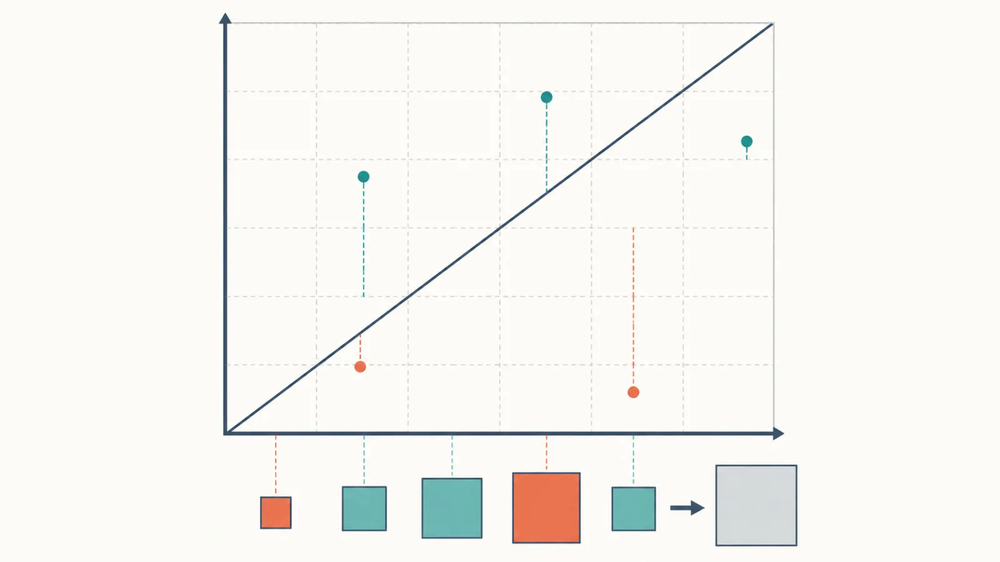
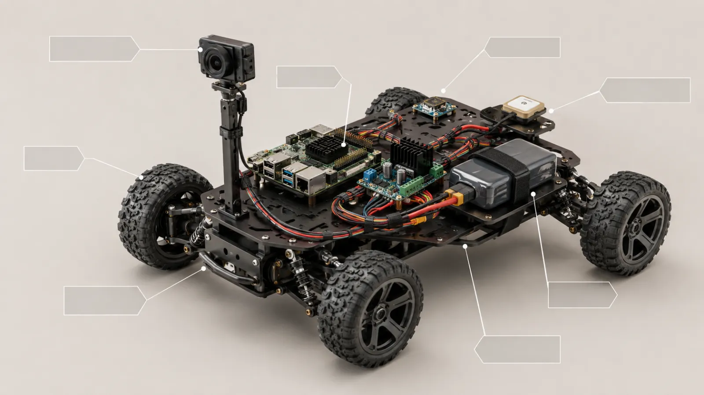

01 · 卫星图 = 栅格数字
卫星考古 · M04 · “图=排成棋盘的数字：大亮小暗”

审查结论：图片适合保留“真实卫星纹理”；但本页的核心是 4×4 数字、亮度映射与放大极限，HTML 可精确表达且可让学生改一个值看亮度变化。
02 · 卷积小窗找竖边
火星车 · M12 · “卷积：拿小窗一格格滑过去找花纹”

审查结论：这页需要精确 3×3 核、对应乘加和“小窗滑动”动画，HTML 明显优于静态图片；图片可作章节封面，不应替代教学主图。
03 · 全库分子指纹矩阵
分子怪物猎人 · M51 · “每行一分子，定长才对齐”

审查结论：图片适合提供“分子 → 指纹”的感性连接；但“定长、每列同一位、矩形才可被模型读取”本质是数据结构，HTML 更精确、更省体积，也可动态演示狗牙边反例。
04 · 残差平方和
PurpleAir · M39 · “每个点离完全一致线多远，为什么要平方再加”

审查结论：图片候选已经出现一处残差方向不可靠的风险；本页需要可核验坐标、可变数据点和平方结果，必须保留 HTML/图表实现。
05 · 拼好的自主火星车
火星车 · M35 · “所有模块拼到一起，第一次能自己跑”

审查结论：这里图片胜出，因为摄像头、主板、电池、线束、轮子在底盘上的真实相对位置本身就是知识；HTML 适合叠加可读标签、功能关系和点击高亮，最佳方案是两者结合。